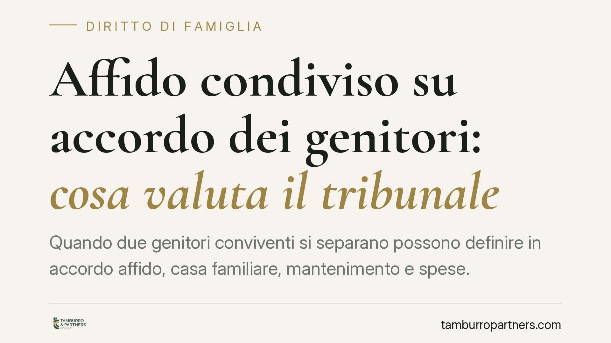

Affido condiviso su accordo dei genitori: cosa valuta il tribunale
Quando due genitori conviventi si separano possono definire in accordo affido, casa familiare, mantenimento e spese. Il giudice non registra passivamente l'intesa: la verifica alla luce dell'interesse del minore. Una recente pronuncia del Tribunale di Bologna offre lo spunto per chiarire come opera il recepimento dell'accordo nel rito unico famiglia e quali passaggi non vanno trascurati.

Il caso
Due genitori, conviventi e non coniugati, hanno presentato al Tribunale di Bologna (Sezione I Civile) un accordo condiviso sulla regolamentazione dei rapporti con il figlio: affido condiviso, assegnazione della casa familiare al genitore collocatario, mantenimento in forma diretta e ripartizione delle spese straordinarie.
Il Tribunale ha recepito l'intesa, ritenendola conforme all'interesse del minore. Ha inoltre precisato un punto processuale: la mancata partecipazione all'udienza del Pubblico Ministero non blocca la decisione, purché gli atti gli siano stati regolarmente comunicati.
*Nota di prudenza redazionale: gli estremi identificativi della pronuncia (numero e data) sono in corso di verifica presso la fonte ufficiale. In questa sede l'analisi ha valore ricostruttivo e non si basa sull'autorità di una specifica sentenza.*
Inquadramento normativo
I procedimenti che riguardano i figli — anche di genitori mai coniugati — rientrano nel rito unico in materia di persone, minorenni e famiglia, introdotto dagli artt. 473-bis e seguenti del codice di procedura civile.
Quando i genitori raggiungono un'intesa, non si parla di *omologazione*: quel termine appartiene alla vecchia separazione consensuale (art. 711 c.p.c., ora assorbito dal rito unico). Nel rito attuale il giudice adotta un provvedimento di recepimento dell'accordo, dopo averne verificato la rispondenza all'interesse del minore. È un controllo di merito, non una semplice presa d'atto.
Sul ruolo del Pubblico Ministero: nei procedimenti che coinvolgono minori l'intervento del PM è previsto dalle norme del rito unico. La sua eventuale assenza fisica in udienza non paralizza la decisione se gli sono stati ritualmente comunicati gli atti e messo in condizione di intervenire. Il principio è coerente con la logica del rito: garantire la partecipazione dell'organo, non subordinare il provvedimento alla sua presenza materiale.
Cosa cambia per i genitori
Il messaggio pratico è duplice.
Primo: l'accordo è la via privilegiata, ma non è automatico. Il giudice può discostarsene se l'assetto proposto pregiudica il figlio. Un'intesa scritta con cura, che dimostri equilibrio e attenzione al minore, ha maggiori probabilità di essere recepita senza rilievi.
Secondo: attenzione alle due voci più delicate, mantenimento diretto e spese straordinarie.
Il mantenimento diretto significa che ciascun genitore provvede autonomamente ai bisogni del figlio nei periodi in cui lo tiene con sé, senza versamento di un assegno all'altro. Funziona quando i redditi dei genitori sono comparabili e i tempi di permanenza equilibrati. Se così non è, il rischio è uno squilibrio economico che ricade sul minore: chi ha meno risorse fatica a garantire lo stesso tenore di vita. In questi casi il mantenimento diretto va integrato, o sostituito, da un assegno perequativo.
Le spese straordinarie sono le voci non ricorrenti e non prevedibili: interventi sanitari, attività sportive, viaggi di istruzione, tecnologia per lo studio. Un accordo ben scritto:
- distingue le spese che richiedono consenso preventivo da quelle sostenibili senza previa intesa;
- indica le percentuali di ripartizione (spesso 50/50, ma non è una regola fissa);
- individua le categorie rientranti in ciascun gruppo, riducendo il contenzioso futuro.
Lasciare queste voci generiche è la principale fonte di liti post-accordo.
Cosa fare in concreto
- Mettete per iscritto ogni voce economica: assegno o mantenimento diretto, casa familiare, spese ordinarie e straordinarie con percentuali e categorie definite.
- Verificate l'equilibrio del mantenimento diretto rispetto a redditi e tempi di permanenza: se c'è divario, prevedete una componente perequativa.
- Definite il meccanismo del consenso sulle spese straordinarie: quali richiedono accordo preventivo, con quali tempi di risposta e come documentare la richiesta.
- Curate la parte sull'interesse del minore: descrivete tempi di frequentazione, gestione delle festività e delle decisioni rilevanti, così da agevolare il recepimento del giudice.
- Prima di depositare, fate rivedere l'accordo a un legale: correzioni a monte costano meno di un contenzioso a valle.
La via consensuale, quando ben costruita, riduce tempi, costi e tensioni. Nessun accordo garantisce di per sé il recepimento: la scelta finale resta al giudice, chiamato a valutare l'interesse del figlio.
Contributo informativo a cura di Tamburro & Partners Avvocati. Non costituisce parere legale.
Ogni famiglia ha il suo equilibrio.
Separazione, divorzio, affidamento, assegno: se vuoi un confronto riservato su una specifica situazione, scrivi allo studio. Ti rispondiamo entro un giorno lavorativo.